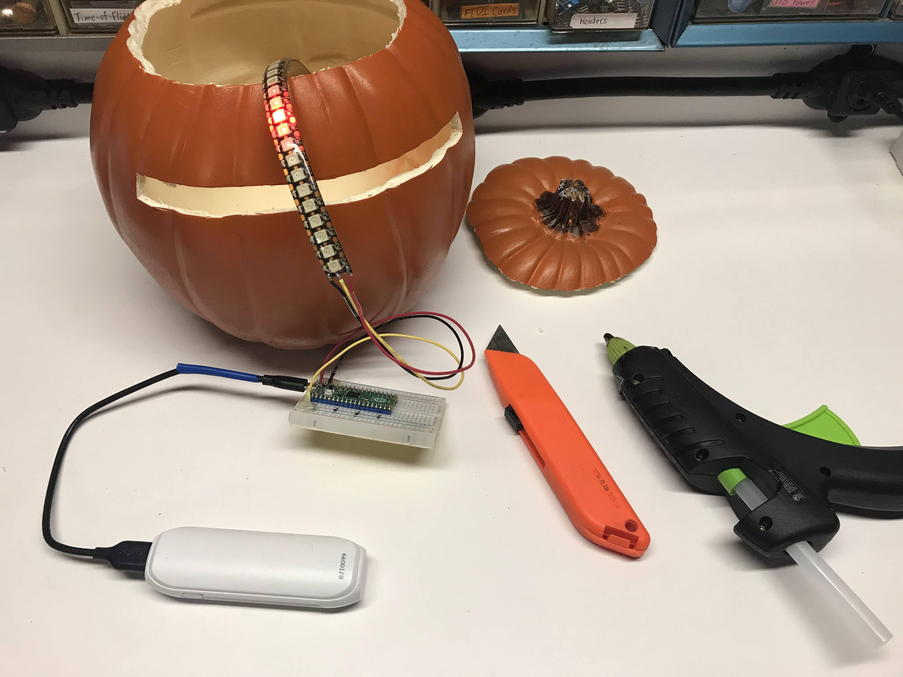
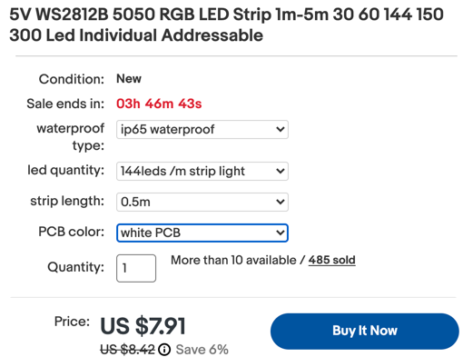

Larson Scanner Pumpkin

The Larson Scanner is a light pattern special effect named after Glen A. Larson. Larson used this pattern to give his Battlestar Galactica Cylon and KITT robot eyes a sense of sentience. See Knight Rider for the backstory.
This project uses a 144 pixel/meter LED strip and a Raspberry Pi Pico to produce this effect.
 I used a craft pumpkin from Michaels. I cut a slit in it and used hot-glue to hold the LED strip in place.
Parts List
- 9" Craft Pumpkin from Micheals $10
- Raspberry Pi Pico ($4)
- Breadboard ($2)
- 27 pixels of WS2811B NeoPixel Strip 144 pixels per meter preferred ($8)
- 3 AA battery pack or a USB battery pack
 This is a screen image from e-bay showing a 1/2 meter of LED strip for $8.
Sample Code
This code shows a five-pixel wide "eye" moving back-an-forth over a 27 pixel strip. There is a central bright red LED surrounded by dimmer red LEDs that move back-and-forth. We are using the NeoPixel library supplied by Blaž Rolih.
The example below has a delay of 1/10th of a second between drawing events. You can make the delay smaller to speed up the speed of the eye movement.
1 2 3 4 5 6 7 8 9 10 11 12 13 14 15 16 17 18 19 20 21 22 23 24 25 26 27 28 29 30 31 32 33 34 35 36 | |
Adding Some Color
The pattern above is faithful to the original Cylon robot pattern, but to be honest, it is a little boring. We can spruce it up a bit by adding some color and the comet-tail pattern.
This program cycles through a "moving rainbow" pattern and then the comet pattern for 10 colors.
1 2 3 4 5 6 7 8 9 10 11 12 13 14 15 16 17 18 19 20 21 22 23 24 25 26 27 28 29 30 31 32 33 34 35 36 37 38 39 40 41 42 43 44 45 46 47 48 49 50 51 52 53 54 55 56 57 58 59 60 61 62 63 64 65 66 67 68 69 70 71 72 73 74 75 76 77 78 79 80 81 82 83 84 85 86 | |
Adding the Cylon Scanner Sounds
You can also add the Cylon eye scanner sound by addint a .wav file to the pico and using the playWave library. This is covered in the Sound and Music Play Audio File lesson of this microsite.
More to Explore
- Add a potentiometer to change the speed of the eye scan.
- Add a button to cycle through colors of the eye.
- Add multiple patterns such as a "comet trail" that has the first pixel brighter and the following pixels dimmer.
- Add a PIR motion sensor that will sense motion and get brighter if motion is sensed.
- Use the new I2S software to play a sound when the PIR motion sensor has been triggered.
- Use an MP3 player such as the DRF0229 to play the cylon sound when motion is detected.
- Add an OLED display and buttons to the back of the pumpkin to change the parameters of the display and the sounds.